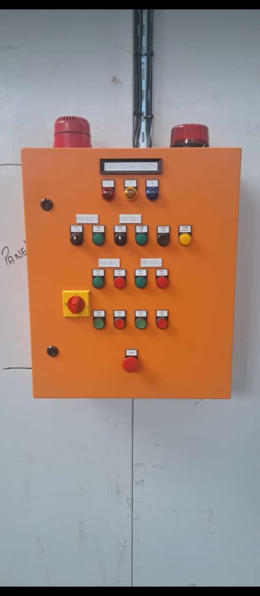

Mnyamne power services was established in 2019 in Regnts park, Johannesburg. The company started by proving residential electrical repairs and has grown to offer commercial and idustrial electrical solutions across Gauteng.
By 2021 we expanded into commercial maintenance contracts for shops and offices. In 20233 we added an industrial division and began offering 24/7 emergency callouts. Ourgrowth was driven bt need for reliable, affordable, and compliant electrical work in a city affected by power cuts.

Our Mission
To deliver safe, reliable, and affordable power solutions to homes and businesses across Johannesburg
We also make sure to maintain the highest standars of safety and compliance
Our Vision
To be the leading trusted electrical and renewable energy service provider in South Africa
To also be known for quality workmanship, fast response times, and customer care
Target Audience
Homeowners in suburbs like Turffontein, Rosetenville and surrounding areas
SMMEs, guest houses, schools, and clinics that cannot afford downtime